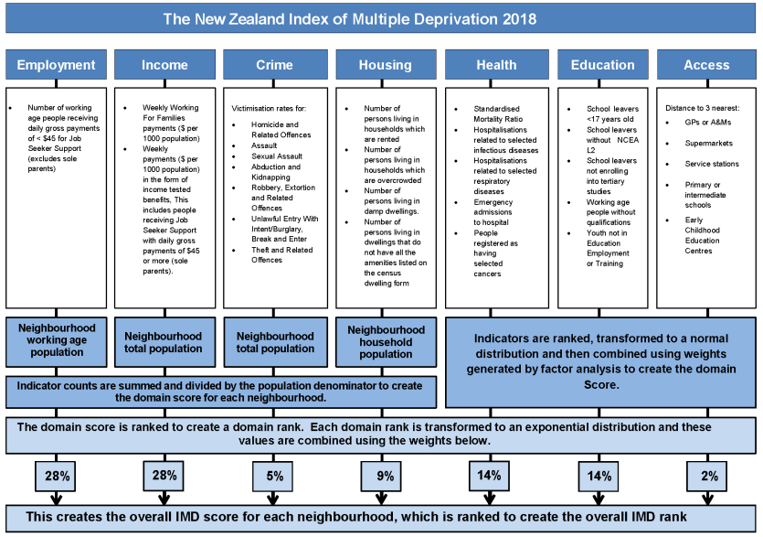
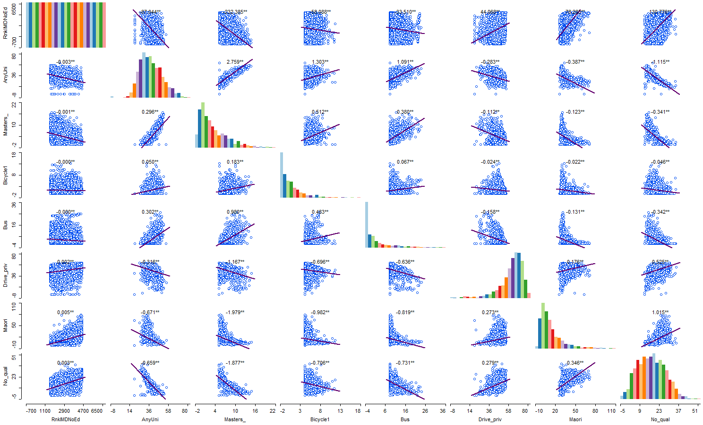
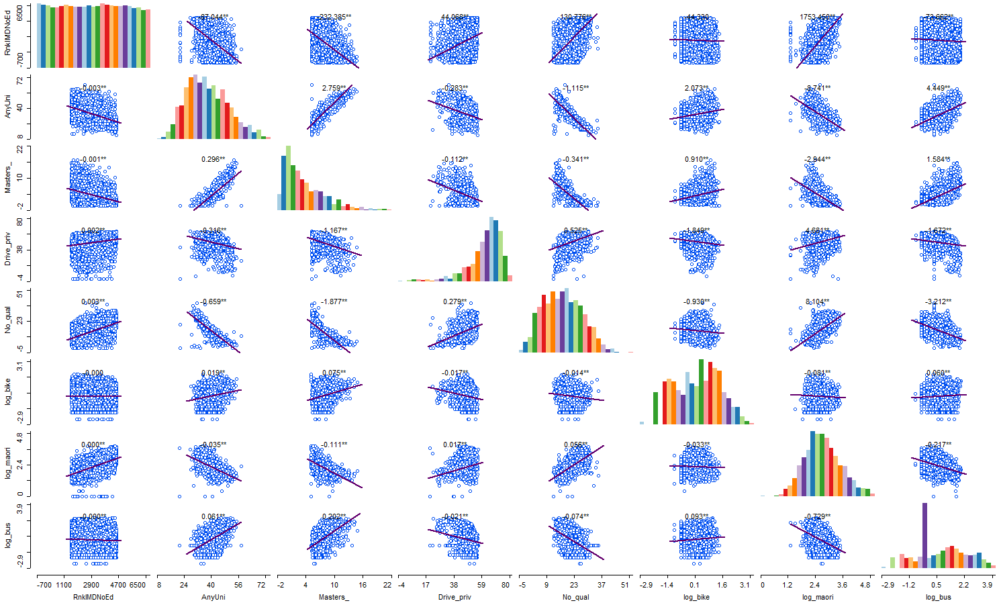
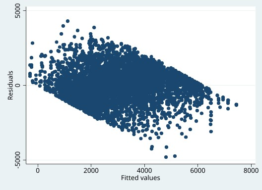
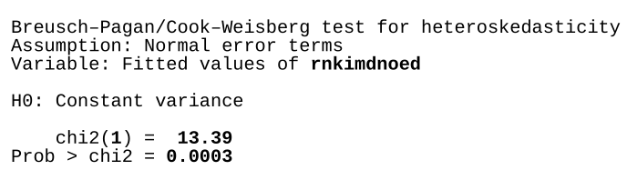
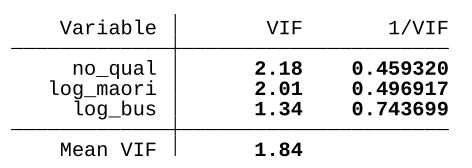
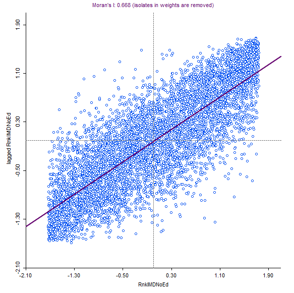
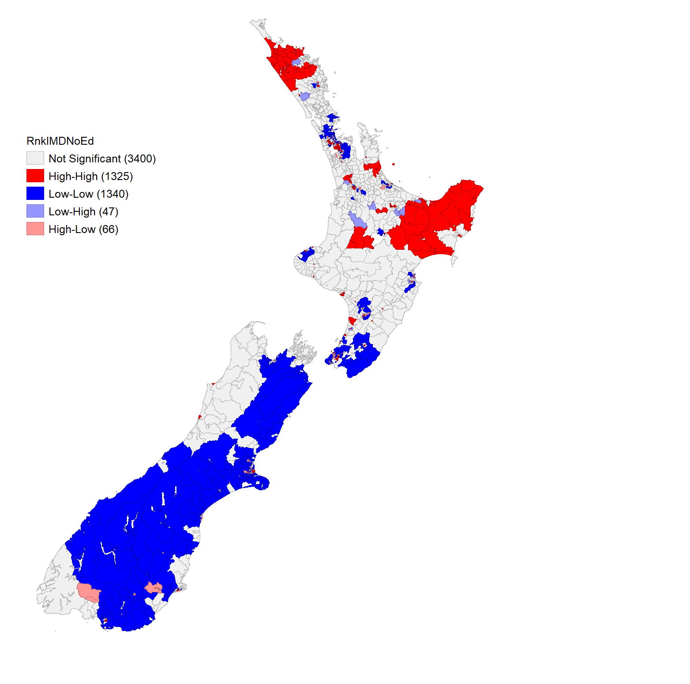

IMD data import code.
library(tidyverse)
imd18 <- readxl::read_excel("IMD2018.xlsx", sheet = "IMD18") # Import dataGEOG 351: Quantitative Analysis
View the source code for this project here.
This paper ventures to investigate the links between education, mode of transportation to work, and Maori status to multiple deprivation in New Zealand. Greater active transportation to school has been linked to higher rates of material and social deprivation in Quebec (Cutumisu et al. 2014). Thus, I believe that greater use of active transportation (such as cycling and public transit use) will be linked to a more deprivation. Furthermore, increased car usage can indiciate a greater lever of affluence (due to the money required for maintenance and gas), leading to my prediction that greater private car usage will lead to lower deprivation. In the literature, deprivation is typically used as a predictor of educational attainment, rather than education determining deprivation (Cooper, Lloyd-Reason, and Wall 2003; Shuttleworth 1995). However, I believe that education and deprivation exhibit a positive feedback (i.e. as educational attainment decreases, material deprivation increases, which decreases educational attainment), and thus chose to investigate to what degree educational attainment influences deprivation. In New Zealand, ethnic-density of Maori has been shown to have a protective effect on health, but this is concealed by the impact of the higher rates of deprivation that Maori experience (Bécares, Cormack, and Harris 2013). I wanted to confirm the close link between Maori status and deprivation already established in the literature as well as see if this could be mitigated by education and mode of transportation. With my focus on mode of transport, education, and Maori status, I would like to see how well they predict deprivation and which predictors are most influential. As deprivation is often spatially autocorreleated, I will investigate if this holds for New Zealand (Bécares, Cormack, and Harris 2013).
library(tidyverse)
imd18 <- readxl::read_excel("IMD2018.xlsx", sheet = "IMD18") # Import dataThe 2018 New Zealand Index of Multiple Deprivation (IMD) is a weighted index of deprivation as determined by measures of employment, income, crime, housing, health, education, and access as seen in Figure 1 (Exeter et al. 2018). Each observation is a “Data zone”, which corresponds to the 2013 New Zealand Census Unit, and ordinal level data displaying the relative rank among all Data zones. It contains variables for ranking by each of these measures and different computations of the IMD that exclude each category (e.g. the IMD without any of the education inputs). For my study I chose to use the Index of Multiple Deprivation that excluded educational data to maintain independence among my variables. It contains 6181 unique observations.
# Importing and cleaning education data
education <- read_csv("2018-census-place-summaries-csv/2018-census-place-summaries-education-table2-2018-csv.csv") %>%
filter(Area_type == "Statistical Area 2")
education <- education %>%
filter(Maori_ethnic_group_indicator_summary_description == "Total") %>%
select(Year, Area_type, Area_code, Highest_qualification_description, Highest_qualification_percent) %>%
pivot_wider(names_from = Highest_qualification_description, values_from = Highest_qualification_percent) %>%
select(!c(`Not elsewhere included`, Total))
# Importing and cleaning ethnicity data
ethnicity <- read_csv("2018-census-place-summaries-csv/2018-census-place-summaries-ethnicity-table1-2018-csv.csv") %>%
filter(Area_type == "Statistical Area 2")
ethnicity <- ethnicity %>%
select(Year, Area_type, Area_code, Maori_descent_description, Maori_descent_indicator_percent) %>%
pivot_wider(names_from = Maori_descent_description, values_from = Maori_descent_indicator_percent) %>%
select(!c(`Response unidentifiable`, `Not stated`, `Total`))
# Cleaning transport data, spitting out the percentage of modes used for work, selecting SA2
transport <- read_csv("2018-census-place-summaries-csv/2018-census-place-summaries-transport-table1-2018-csv.csv")
transport <- transport %>%
select(Year, Area_type, Area_code, `Main_means_of_travel_to_work_description`, `Main_means_of_travel_to_work_percent`) %>%
pivot_wider(names_from = `Main_means_of_travel_to_work_description`, values_from = `Main_means_of_travel_to_work_percent`) %>%
filter(Area_type == "Statistical Area 2") %>%
select(!c(`Did not go to work today`, `Not elsewhere included`))
# Binding the census data together
vars <- left_join(education, ethnicity, by = "Area_code") %>%
left_join(., transport, by = "Area_code")
vars <- vars %>%
select(!c(Year, Year.y, Area_type.y, Area_type.x, Area_type)) %>%
rename(
`Total Education` = `Total stated.x`,
`Year` = Year.x,
`Total Ethnicity` = `Total stated.y`,
`Total Transport` = `Total stated`
)
# Creating groupings for education
vars <- vars %>%
mutate(
Secondary = as.numeric(`Level 1 certificate`) + as.numeric(`Level 2 certificate`) + as.numeric(`Level 3 certificate`) + as.numeric(`Overseas secondary school qualification`),
`Some University` = as.numeric(`Level 4 certificate`) + as.numeric(`Level 5 diploma`) + as.numeric(`Level 6 diploma`),
Tertiary = as.numeric(`Bachelor's degree and level 7 qualification`) + as.numeric(`Post-graduate and honours degrees`),
`Post-tertiary` = as.numeric(`Master's degree`) + as.numeric(`Doctorate degree`),
`Any University` = as.numeric(`Level 4 certificate`) + as.numeric(`Level 5 diploma`) + as.numeric(`Bachelor's degree and level 7 qualification`) + as.numeric(`Post-graduate and honours degrees`) + as.numeric(`Master's degree`) + as.numeric(`Doctorate degree`)
) %>%
select(!c(`Level 1 certificate`, `Level 2 certificate`, `Level 3 certificate`,
`Level 4 certificate`, `Level 5 diploma`, `Level 6 diploma`,
`Bachelor's degree and level 7 qualification`, `Post-graduate and honours degrees`,
`Master's degree`, `Doctorate degree`))New Zealand uses a unique method of classifying education attainment, with a 7 level certificate / diploma system. I compiled this information to be as comparable as possible to the Canadian system of “Secondary”, “Some University”, “Bachelors”, “Graduate”, and “Post-graduate”. I also combined these to make variables that combined any university experience and any university degree past a Bachelors.
To answer my research questions linking education, mode of transport, and Maori status to deprivation, I used data from the 2018 New Zealand Census at the Statistical Area 2 (SA2) geographic level (Stats NZ 2020). Unfortunately, the SA2 zones are larger than the Data zones of the IMD, with the census data having 2254 unique entries.
analysis <- read_csv("data.csv") %>%
select(RnkIMDNoEd, No_qual, Maori, Drive_priv, Bus, Masters_, AnyUni, Bicycle1) %>%
rename(
Bike = Bicycle1
)
# Import spatially joined dataTo combine these two data sources, I used a spatial join in ArcGIS Pro with the greatest overlap method, joining the census data to the IMD. This resulted in some of the resulting entries having the same census data variables, but unique deprivation values, which lead to inherent spatial correlation among these census variables. This resulted in 6181 different observations in the final dataset.
Response
RnkIMDNoEdu: Ranked index of multiple deprivation that was made without education data (Ordinal).
Predictors
No_qual: % of people with no proof of education (Ratio).
AnyUni: % of people who have any university education (Ratio).
Master_: % of people with post-bachelor’s education (Ratio).
Maori: % of people with Maori heritage (Ratio).
Drive_priv: % of people who drive their own vehicle to work (Ratio).
Bus: % of people who take the bus to work (Ratio).
Bike: % of people who bike to work (Ratio).
Only No_qual and AnyUni appear to be normally distributed, with RnkIMDNoEdu uniformly distributed, Master_ right skewed, and Drive_priv left skewed (see Figure 2). While I would use a Shapiro-Wilk test to confirm their lack of normality, it is invalid for samples with > 5000 observations.
Bike, Bus, and Maori appear to have a logistic distribution and were thus transformed.
Bike, Bus, and Maori.analysis <- analysis %>%
mutate(
log_maori = log(Maori),
log_bus = log(Bus),
log_bike = log(Bike)
)
# Logarithmic transform on some variablesAfter this transformation, Bike and Maori appear more normally distributed, while Bus has a very large number of values at one point and is otherwise uniformly distributed (see Figure 3).
All relationships will be investigated through a Spearman correlation and a multiple linear regression model, with the potential spatial correlation of multiple deprivation in New Zealand investigated through Moran’s I and, if significantly related, evaluated in a spatial multiple linear regression model.
The Spearman Correlation is a non-parametric test of correlation, requiring only that each sample is independent from each other. It accepts Ordinal, Interval, and Ratio level data. It will be run on each predictor variable and the response variable to assess the predictors’ correlation to the response and any potential collinearity. I also used Bonferroni p-value correction to correct the significance value of any of the many comparisons I made.
The relationship between the variables will then be investigated with an Ordinary Least Squares multiple linear regression, with the predictor variables determining the response. This assumes that the relationship is linear, the predictors are normally distributed, there is no collinearity among the predictors, the residuals are homoskedastic, and the residuals are normally distributed. We can ignore the requirement of normality for the predictors due to the large number of observations and will test our assumptions after the model.
Moran’s I investigates the spatial autocorrelation of a variable, with a positive value indicating positive spatial autocorrelation. For this dataset, RnkIMDNoEd will be investigated due to its lack of duplication of variables and to answer our initial research question.
The final multiple linear regression model will be run in GeoDa using a Queen weights to test the significance of spatial lag and spatial error. If both are significant, the more significant test will determine the model to be run. For a spatial lag model, this means that a spatially significant lag of our result variable is added to our predictors. For a spatial error model, any potentially spatially dependent errors are resolved.
spearman rnkimdnoed no_qual drive_priv log_bus masters_ anyuni log_maori log_bike, stats(rho obs p) bonferroniThe results of the Spearman correlation are visible in Figure 4. As we can see from the STATA output, the comparison is limited by the number of observations in log_bus (4669 observations). Every corresponding correlation is significant at the 95% confidence level aside from log_maori and log_bike. However, AnyUni and Master_ have a Pearson correlation of more than 0.9 with No_qual, which indicates that these variables are likely autocorrelated. As No_qual has the greatest correlation with RnkIMDNoEd, it will preserved while AnyUni and Master_ are excluded from further analysis.
After a logistic transformation any zero values receive a value of -\infty and were thus excluded from analysis.
From our Spearman correlation, we can conclude that a higher rate of no of educational qualifications is related to a higher rate of deprivation, while a greater amount of any university education is correlated to a lower rate of deprivation. Somewhat confusingly, any amount of university education is more correlated to a lower rate of deprivation than only those with a graduate degree or beyond (Spearman correlation coefficient of -0.5622 to -0.5244). Maori status is significantly related to a higher rate of deprivation with a coefficient of 0.6945. In contrast to my original hypothesis, greater modal share of driving a private vehicle to work is related to a higher rate of deprivation (coefficient of 0.3521). Active transportation (in the form of riding a bike or taking a public bus) is linked to lower rates of deprivation, with the log transform of these variables having a correlation coefficient of -0.0472 and -0.0792 respectively.
regress rnkimdnoed no_qual drive_priv log_bus log_maori log_bike, beta
regress rnkimdnoed no_qual log_bus log_maori log_bike, beta
regress rnkimdnoed no_qual log_bus log_maori, betaThe initial regression model is visible at Figure 5. Here, both Drive_priv and log_bike are not significant, though Drive_priv is more so, and was thus excluded from the next model, visible in Figure 6. As log_bike still has an insignificant p-value, and was excluded. The final model, visible in Figure 7, has an adjusted R^2 of 0.6156 and a \sqrt{MSE} of 1118.6. I believe that this is a reasonable model for an ordinal response variable, with a relatively high R^2 though the \sqrt{MSE} is rather high because of the uniformly distributed response variable.
| Predictors | Beta Coefficients |
|---|---|
no_qual |
0.4358954 |
log_bus |
0.3789292 |
log_maori |
0.5379429 |
We can now consider the combined influence of mode of transport, educational attainment, and Maori status on deprivation. Maori status has the greatest effect on deprivation with a \beta coefficient of 0.54, while a lack of educational qualifications is still influential with a \beta coefficient of 0.44. Bus ridership to work, while less important, is influential with a \beta coefficient of 0.38. Unlike the Pearson correlation, however, an increase in bus ridership is related to a greater rate of deprivation in the linear regression model, but maintains my original prediction that greater active transportation would be linked to higher rates of deprivation.
rvfplot
estat hettest
vifEven before testing our assumptions made of our multiple linear regression model, we already know that our data was not normally distributed prior to our analysis. This is confirmed by the Residuals vs. Fitted plot (Figure 8), which has a strong negative linear trend due to the uniformity of the response variable.
However, the variance of the residuals must also be assessed. Using a Breusch–Pagan/Cook–Weisberg test for heteroskedasticity, we reject the null hypothesis of homoskedasticity and affirm that the residuals are heteroskedastic (Figure 9).
We can confirm that there is no autocorrelation between our variables by checking the Variance inflation factors (VIFs) of each independent variable (Figure 10), where the greatest value is 2.18 for No_qual.
Figure 11 displays the Global Moran’s I scatter plot, with an I of 0.668 using a Queen weights matrix for RnkIMDNoEd. This has a p-value of 0.001 with 999 random permutations (Figure 12), indicating that there is a significant spatial correlation to deprivation in New Zealand. This is visible in the local clusters of deprivation (Figure 13), many of which are highly statistically significant (Figure 14). Thus we can confirm our hypothesis that deprivation in New Zealand is spatially correlated.
Knowing that deprivation in New Zealand is spatially correlated, we can improve our linear regression model. While running the previous regression model in GeoDa produces a different output (as it does not exclude the same values as STATA), the outputs of the spatial correlation tests are still valid. Figure 15 displays the values and significance of the Lagrange multipliers for spatial lag and spatial error, leading me to choose a spatial lag multiple linear regression due to its greater Robust LM value (395, p=0.000 to Spatial Errror’s 129, p=0.000).
The spatial lag multiple linear regression (Figure 16) was conducted with a Queen weight matrix with any isolates removed on the same variables as the final multiple linear regression (No_qual, log_maori, and log_bike). The spatial lag linear regression model has an R^2 of 0.705 and a \sqrt{MSE} of 969, considerable improvements from the standard linear regression. However, the model is still heteroskedastic, rejecting the null hypothesis of homoskedasticity in the Breusch-Pagan test, nor are the residuals normally distributed. However, the model does show the significant impact that the spatial distribution has on deprivation in New Zealand, with each other predictor variable having a z-value of \approx 22.5.
Links to deprivation in New Zealand have been investigated before but have taken the form of deprivation’s impacts on other aspects of life. Investigating potential linkages to deprivation can allow us to better consider the patterns of who experience the most deprivation, which are often those least able to cope with it. This investigation involved some ad-hoc change of procedures, particularly in the linking of the 2018 New Zealand Index of Multiple Deprivation and Census New Zealand’s 2018 SA2 data. While the original 2013 IMD had the same geographic zones as the 2013 New Zealand Census, in 2018 New Zealand updated its census units and structures to allow for more data to be available to researchers. However, the 2018 IMD, to maintain continuity with the 2013 IMD, did not change its geographic units. My oversight of these differences required me to perform a spatial join in ArcGIS Pro, which was not the ideal way to combine these datasets. With more time or experience using a Thiessen polygon construction or Inverse Distance Weighting method to interpolate the census data to the IMD data would have been ideal. With the linkage of lack of educational credentials, bike usage, and Maori status to deprivation, a deeper dive can be made into how these connections have come to be or what mechanisms maintain them.



log_bike, log_maori, and log_bus appearing more normal.After transformation, RnkIMDNoEd is no longer normal. As some entries for maori, bike, and bus were not available (e.g. -\infty), these entries were removed from the dataset.


drive_priv removed).
log_bike removed).



RnkIMDNoEd from Geoda.
RnkIMDNoEd from GeoDa.